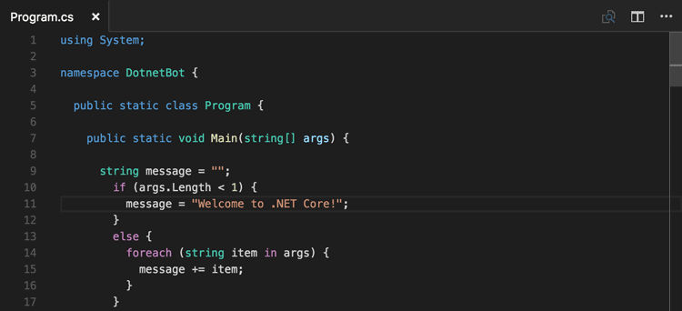
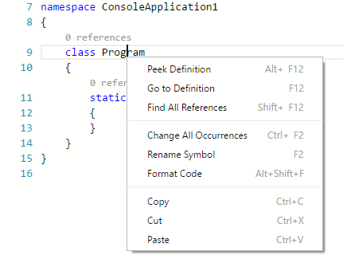
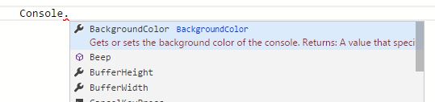
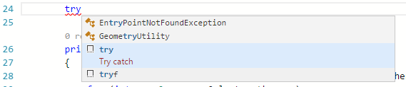
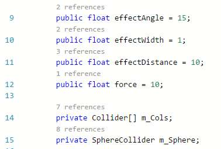
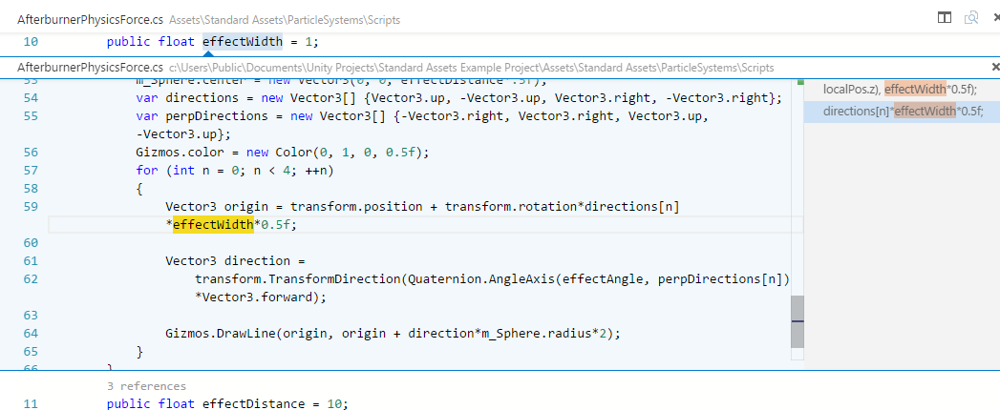

Working with C#
The C# support in VS Code is optimized for cross-platform .NET Core development (see working with .NET Core and VS Code for another relevant article). Our focus with VS Code is to be a great editor for cross-platform C# development. For instance, many Unity game developers enjoy using VS Code in place of the MonoDevelop IDE.

VS Code supports debugging of C# applications running on either .NET Core or Mono.
For detailed instructions on:
- .NET Core debugging - see the Microsoft C# extension's GitHub page.
- Mono debugging - see the Mono Debug extension's README.
Note: VS Code does not support debugging applications running on the Desktop .NET Framework.
Due to this focus, many standard C# project types are not recognized by VS Code. An example of a non-supported project type is an ASP.NET MVC Application (though ASP.NET Core is supported). In these cases, if you want to have a lightweight tool to edit a file - VS Code has you covered. If you want the best possible experience for those projects and development on Windows in general, we recommend you use Visual Studio Community.
Installing C# support
C# language support is an optional
install from the Marketplace. You can install it from within VS Code by searching for
'C#' in the
Extensions: Install Extension dropdown (kb(workbench.action.showCommands)
and type ext install) or if you already have a
project with C# files, VS Code will prompt you to install the
extension as soon as you open a C# file.
Video Tutorial on Getting Started with C# in VS Code with .NET Core
In addition to the Microsoft C# extension, the community has produced other extensions.
Tip: The extensions shown above are dynamically queried. Click on an extension tile above to read the description and reviews to decide which extension is best for you. See more in the Marketplace.
Roslyn and OmniSharp
Visual Studio Code uses the power of Roslyn and OmniSharp to offer an enhanced C# experience. We offer support for:
- .NET Core projects
- MSBuild projects
- C# scripts (CSX)
On startup the best matching projects are loaded automatically but you can also choose your projects manually. The status bar will show what projects have been loaded and also allows you to select a different set of projects. To do so, click on the status bar projects item and select Change projects…. In the image below a single project has been picked up:

The available options include:
-
Selecting a
project.jsonfile will open a .NET Core project and VS Code will load that project plus the referenced projects. -
Selecting a
*.slnfile opens a MSBuild-project. It will load the referenced*.csprojprojects and sibling or descendantproject.jsonfiles but no other project files that are referenced from the solution file. -
Selecting a
folderwill make VS Code scan for*.sln,project.jsonand*.csxfiles (C# scripts) and VS Code will attempt to load them all.
Once the project is loaded the enhanced experiences light up...
Editing Evolved
There is a lot to discover with C# and the editor, such as format on type, IntelliSense, the rename-refactoring, etc.

For a full description of our editing features, go to the Basic Editing and Code Navigation documentation.
Here are a few highlights...
IntelliSense
IntelliSense just works hit
kb(editor.action.triggerSuggest) at any time to
get context specific suggestions.

Snippets for C#
We have several built-in snippets included in VS Code that
will come up as you type or you can press
kb(editor.action.triggerSuggest) (Trigger
Suggest) and we will give you a context specific list of
suggestions.

Tip: You can add in your own User Defined Snippets for C#. Take a look at User Defined Snippets to find out how.
Search for Symbols
There are also features outside the editor. One is the ability
to search for symbols from wherever you are. Hit
kb(workbench.action.showAllSymbols), start
typing, and see a list of matching C# symbols. Select one and
you’ll be taken straight to its code location.

CodeLens
Another cool feature is the ability to see the number of references to a method directly above the method. Click on the reference info to see the references in the Peek view. This reference information updates as you type.
Note: Methods defined in
object, such asequalsandhashCodedo not get reference information due to performance reasons.

Tip: You can turn off references information displayed in CodeLens with the
editor.codeLenssetting.
Find References/Peek Definition
You can click on the references of an object to find the locations of its use in place without losing context. This same experience works in reverse where you can Peek the definition of an object and see it inline without leaving your location.

Quick Fixes / Suggestions
There are some basic quick fixes supported in VS Code. You
will see a lightbulb and clicking on it, or pressing
kb(editor.action.quickFix) provides you with a
simple list of fixes/suggestions.

Next Steps
Read on to find out about:
- .NET Core Development - get up and running with cross-platform .NET
- Basic Editing - Learn about the powerful VS Code editor.
- Code Navigation - Move quickly through your source code.
- Tasks - use tasks to build your project and more
- Debugging - find out how to use the debugger with your project
Common Questions
Q: My Project won't load.
A: VS Code only supports a limited set of project types (primarily .NET Core). For full .NET project support, we suggest you use Visual Studio Community.
Q: IntelliSense is not working.
A: This is typically as a result of the current project type not being supported. You can see an indication in the OmniSharp flame in the bottom left hand side of the status bar.
Q: How do I build/run my project?
A: VS Code supports tasks for build and natively understand the output of MSBuild, CSC, XBuild. Find out more in the Tasks documentation.